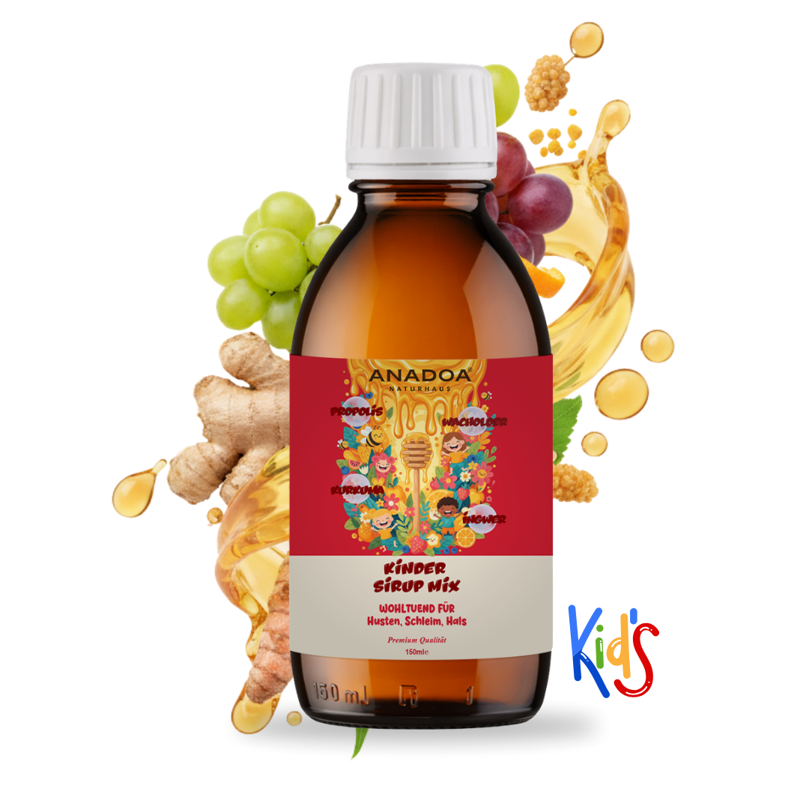

Schonendes Vakuum-Verfahren
Niedrigtemperatur-Einkochung bewahrt empfindliche Enzyme, Vitamine und Pollen bestmöglich.
Ohne künstliche Zusätze
0% raffinierter Zucker, 0% Glukosesirup, keine künstlichen Farbstoffe oder Konservierungsmittel.
Kindgerechter Geschmack
Fruchtig-mild abgerundet mit Honig, echten Erdbeeren und feinem Orangenöl.

Anadoa Sirup Mix für Kinder
Mit feinem Honig, Johannisbrot-Extrakt, Wacholderbeeren, Propolis, Orangenöl und 100 mg Vitamin C.

Schwarze Maulbeere Sirup für Kinder
Reiner Schwarze-Maulbeere-Extrakt kombiniert mit Honig, Propolis, getrockneten Erdbeeren und 250 mg Vitamin C.

Tannenzapfen Paste für Kinder
Traditionelle anatolische Rezeptur aus Zypressenzapfen, feinstem Honig, Propolis, Kurkuma und Vitamin C.

Schwarzkümmelöl für Kinder (Orange)
Kaltgepresstes Nigella Sativa mit hohem Thymoquinon-Gehalt, sanft abgemildert durch natürliches Orangenöl.

Schwarzkümmelöl für Kinder (Erdbeer)
Die fruchtige Variante: Reines Schwarzkümmelöl verfeinert mit sonnengereifter Erdbeernote – beliebt bei Groß und Klein.
Häufige Fragen zu unseren Kinder-Produkten
Warum wird für den Kinder Sirup ein Vakuum-Verfahren genutzt?
Das Einkochen in speziellen Vakuumkesseln bei niedrigen Temperaturen bewahrt die hitzeempfindlichen Enzyme, Vitamine und Pflanzenstoffe von Honig, Propolis und Fruchtextrakten bestmöglich.
Enthalten die Kinder-Produkte zusätzlichen Zucker?
Nein, alle unsere Kinder-Produkte sind vollkommen frei von raffiniertem Zucker, Glukosesirup, künstlichen Farbstoffen und chemischen Konservierungsstoffen. Die Süße stammt ausschließlich aus natürlichem Honig und reinem Fruchtextrakt.
Wie schmeckt das Schwarzkümmelöl für Kinder?
Dank schonender Kaltpressung und der Zugabe von natürlichem Orangenöl oder feinstem Erdbeeraroma ist das Öl besonders mild und wird von Kindern gerne pur oder im Müsli eingenommen.